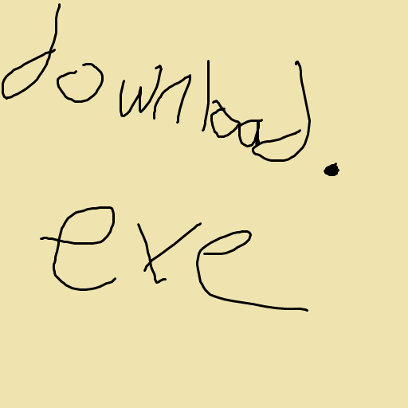

GitHub
GitHub

Contact Us
got a question, feedback, or just wanna chat? here's how you can reach out!
get in touch!
the best way to reach me is through one of these channels:
- discord: @justtrisie (doesn't change, open to friend requests)
- discord server: https://discord.gg/V9DdGqtBX2 (for general questions, support, or just hanging out!)
- github issues: if you've found a bug or have a feature request for `download.exe`, feel free to open an issue on the download.exe github repo.
i'll try to get back to you as soon as i can!